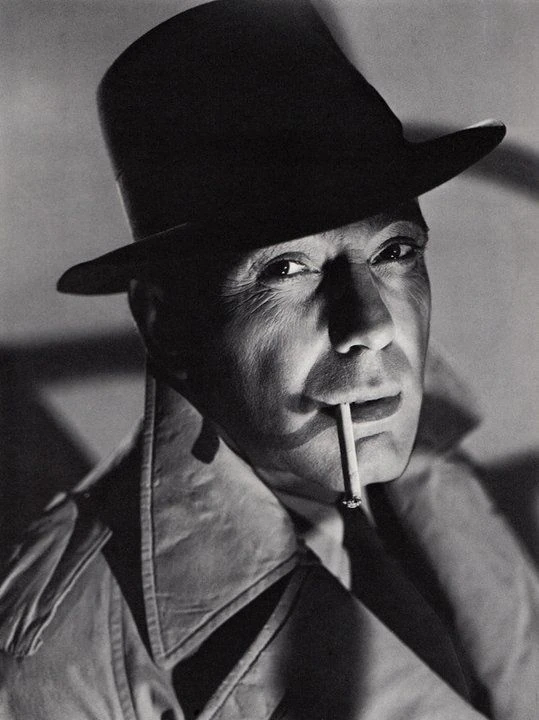
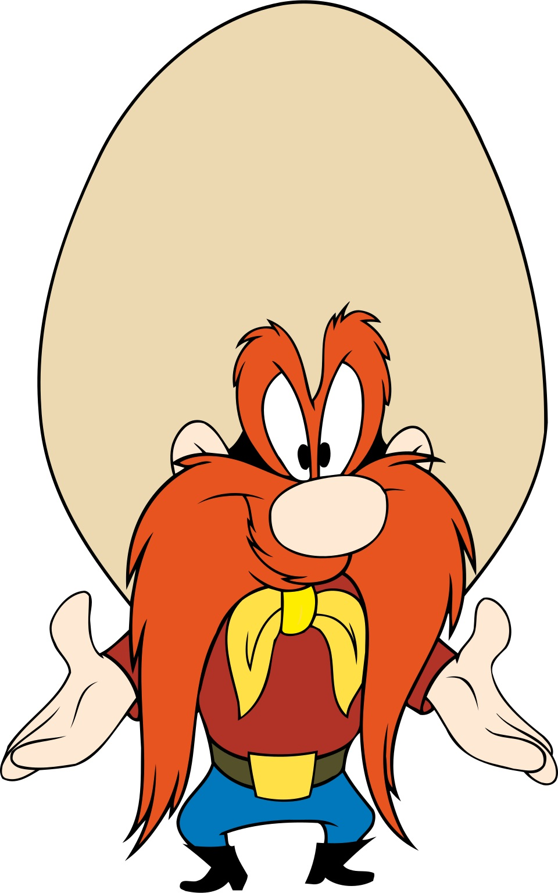

Notes
Dimensions are approximate and are based on visual comparison and available documentation.
This work references Humphrey Bogart.
This work references Yosemite Sam.
Ancillary Documentation
The following materials document source imagery connected to the work.

